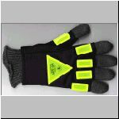
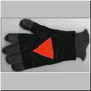
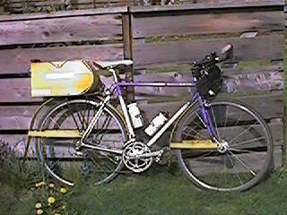
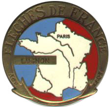

Volume 8 Issue 2 - March/April 2003
2003 Brevet Schedule
The hardest 200 km in a long time
Endeavor to Persevere: The SIR 300 km
200 km Robb Simmons Report
Tales from Behind: 200 km
Tales from Behind: 300 km
Amy Harman and Old Silver on the 300 km
2003 Flèche Northwest
Cars, Confessions, and Cavanaugh
Saturday's Epic Ride
200k, eh
Road Snippets
200 km and 300 km Results

NOTE: Please send any equipment reviews, PBP insight or ride reports for the May/June newsletter to Jon Muellner! I know most of you can write so let's generate some copy folks!
Paris-Brest-Paris is soon to be upon us, so don't forget to get your passport renewed or completed before August!
SIR Email List
For those of you on-line, join in the SIR email list! It's a great way to share info, ride schedules, car-pooling to events and training with other SIR members. To get on go to http://www.phred.org/mailman/listinfo/sir. It's easy!
SIR Volunteers Needed
SIR members wishing to help out on any of the brevets, please contact the organizer directly and offer your support. This is an important series this year will be easier if we all pitch in!
| Date | Distance | Organizer | Route |
|---|---|---|---|
| April 18-19 | Flèche Northwest | Peter McKay | Semi-ah-moo finish |
| May 3 | 400 km | Bill Dussler | Starting from Enumclaw, we'll head south through Eatonville to explore the western foothills of the Cascades and Mt St Helens before heading west and north back to the start. |
| May 16-18 | Flèche Pacifique | Barry Bogart, BC Randonneurs | Harrison Hot Springs finish. |
| May 24-25 | 600 km | Jon Muellner | Olympic Peninsula circuit from 2002. |
| June 13-14 | 600 km | Mark Thomas | |
| June 13-16 | 1000 km | Mark Thomas | |
| June 15 | 400 km | Mark Thomas | |
| July 4 | 300 km | Terry Zmrhal | |
| July 4-5 | 600 km | Terry Zmrhal | |
| July 5 | 300 km | Terry Zmrhal | |
| July 6 | 200 km | Terry Zmrhal | |
| July 26 | 300 km | Paul Johnson/Dave Read/Brian List | |
| July 27 | 200 km | Paul Johnson/Dave Read/Brian List | |
| Sept 13 | 100 km Populaire | Jan Heine | |
| Sept 20 | 200 km | Wayne Methner | |
| Sept 26-28 | 1000 km | Mark Thomas (or volunteer!) |
By Jan Heine
At 3 a.m. on a Saturday in mid-March, I woke up to the sound of rain on the roof. Well, I am a randonneur, I thought. But an hour later, when I left on my bike to ride to the 7 a.m. start, it had stopped raining. Riding along Lake Washington, it was a beautiful night, with the lights of Bellevue glittering from the other side. At the south end of the lake, another cyclist caught up with me: Tim Hamnett, another randonneur. Together, we made our way to the Cedar River trail, which was beautiful in the twilight. After climbing up the hill toward Greg Cox' house, we took the Soos Creek trail. Not sure where to exit, we spent a few exciting moments with a map as the departure time approached, before determining that we had only a mile or so to go.
It was great to see so many randonneurs at the start, even though the cloudy skies looked ominous as we set out. Soon, a small group formed at the front with Ken Bonner, the famous Canadian randonneur, Ken Philbrick, with whom I had ridden two weeks prior in the 100 km Populaire, and myself. The pace was fast until I remarked that we were likely to reach the first control before it opened. We slowed, and made it to Black Diamond four minutes after the opening of the control. A quick stop for signatures at the bakery, and off we were into the hills toward Hobart. Ken P. was forcing the pace, and Ken B. soon dropped back. At Hobart, another quick stop, and after less than 30 seconds, I was back on the road. I slowly rode ahead, expecting Ken P. to catch up soon. But nobody came. After seeing everybody go the other way in good spirits, I reached the turnoff toward Enumclaw. A rider approached from behind, but to my surprise, it was somebody unknown. Considering the positions of riders I had witnessed on the way to Hobart, this guy must have flown at an amazing speed. But no, he was not part of our group, just wanted a closer look at my Rivendell. We rode together for a bit, two abreast (no drafting off non-participants!), before our ways separated. As I reached the secret control, I saw another rider behind. This time, it was Ken P., and after a short while, he had caught up and we were back together.
The headwinds were picking up, yet we made good progress into Enumclaw. Another control, then we followed the familiar Ramrod course. We passed some "patriotic" signs in Buckley ("We serve American fries"), making me wonder about the wisdom of wearing a jersey proclaiming myself as a "Seattle Randonneur" in these parts. Ken was pushing big gears at 35 km/h into the strong headwinds, leaving me to hang on and take an occasional short pull. As I was getting exhausted, I thought surely Ken would have to slow eventually. During our 100 k, I had no problem keeping up on a 51-year-old bike, but of course, that was hilly, and I like hills. Today's ride was flat, and even a bike 47 years newer couldn't help me much, with my lack of power and rather tall body sticking in the wind. (Ken appears to be even taller, but much more powerful.)
Then we missed a turn. Ken was leading, and maybe with my vision blurred by the suffering, I read a line in the route sheet ("ST on SR 165E") twice and continued left onto SR 165 when we should have turned right onto SR 162. We suspected our error as we reached the next town, Wilkeson, spent a few minutes trying to figure things out, asked a few confused locals about whether we were on SR 162 or 165 (they insisted it was 162, when it was 165!), then took a short-cut to South Prairie. Wonderful road, great rollers, but the detour added at least 10 km to our ride. Back on course, we started passing riders who had taken the correct route.
But soon, I found myself exhausted from the pace and dropped back. My speed dropped to 22 km/h, and I did not feel very good at all. I calculated that even at this pace, I should be able to finish the ride within the time limit, so at least my participation in PBP was not jeopardized at this early stage! I decided I needed a break, and at the next gas station, I got off, bought a bottle of Coca-Cola and rested for two minutes. Refreshed, I remounted my bike and decided that not all was lost. The Orville Road toward Eatonville is one of my favorites, helping to improve my spirits. At a road construction, I caught up with Sam Eldersveld and Mark Pringle, who were waiting for a pilot car. They informed me that the leaders were only minutes ahead. I used the stop to pump up my leaking rear tire, use the bathroom and eat. After about 10 minutes, a pilot car guided us past the construction. Soon, we reached the last hill toward Eatonville. After a climb that seemed longer than ever to my tired legs, we entered the bakery, full of cyclists. A group was getting ready to depart, so I bought another bottle of Coca-Cola, depositing money plus ample tip on the counter rather than waiting in line (sorry!), filling my water bottle in the bathroom, and heading out together with Ken P. and a few others in pursuit of the lead group. We put in a good effort to make sure we rejoined them before the construction - if they got through just before us, we would lose 10-15 minutes that would be hard to regain. As it were, we all waited together for a while before resuming our spirited ride along the rolling road. The pace was fast, but with 10 or so people, the spells at the front were short and far apart. Still, I realized that I was working as hard as I could without suffering another "defaillance." Soon, the rollers got a bit bigger, the pace dropped, making things easier for me. But our group was reduced to five. We stayed together for a while, until we left the hills and flew along with the tailwinds. Ken P. was in front, and our speed climbed inexorably as he shifted from cog to cog. 38 km/h. Shift. 42 km/h. Shift. 46 km/h. Shift. 50 km/h. Stunned by this acceleration, I wondered where it would end? Mark Vandekamp remarked under his breath "And he has four more (cogs) to go!" As we hit 54 km/h, I was working all-out just to stay in the draft of the group. Mark let a gap open, and nobody showed any intention to close it. So I sprinted around, caught up with Ken and rode in his draft for a while. After a few km, I realized that I, too, could not keep up the pace. I told Ken to go ahead on his own, but he had enough, too, and slowed a bit. After a brief stop at the South Prairie gas station, our wild race continued. Well, Ken raced, I hung on. Only after we left Enumclaw, did it get easier. Descending into the Green River was fun, and on the climb out of the valley, I felt good for the first time. Ken was getting tired, finally, and I could relax and recover while ascending the steep hill. The last miles back to Greg Cox' house were enjoyable, I having recovered some and Ken being tired, we finally were about equal in our strength and took turns at the front. We arrived 7:55 hours after we left, slower than last year's time (detour, delays due to construction), but slightly faster average rolling speeds (31 km/h) despite the headwinds. Most of all, I know now that I have to train hard if I want to keep up in the future!
The ride home with William Roberts was thoroughly enjoyable. A light tailwind, moderate pace, interesting conversation, all reminded me of the joys of cycling that had been somewhat absent from this 200 km brevet. And I got home just in time for dinner!
By Kent Peterson
Note: The following report contains graphic descriptions of physical illness. If you are queasy about such things, you may want to stop reading now.
One of my favorite movies is Clint Eastwood's classic "The Outlaw Josie Wales" and my favorite character in that movie is Lone Watie, the old Indian played by Chief Dan George. Lone Watie tells of how he dressed like Abraham Lincoln when he went to Washington to meet with the Secretary of the Interior. The Secretary and the other white chiefs in Washington told the Indians "You boys sure look civilized" and they took pictures and they gave Lone Watie and the others medals for looking so civilized. When Lone Watie tells the white chiefs that the Indian land had been stolen the Secretary advises them to "endeavor to persevere." The papers publish the pictures with the caption "Indians vow to endeavor to persevere." Lone Watie then tells Josie Wales, "We thought about it for a long time 'Endeavor to persevere' and when we had thought about it long enough, we declared war on the Union."
I was not about to declare war on the Union but in the past week some hostile microbe had decided to declare war on me. So I spent the days before the SIR 300K laying around my home, coughing up gallons of phlegm and devoting what little strength I had into whining at my long suffering wife and kids until they got completely sick of reassuring me that I was not in fact actually dying. My fourteen year old son was an expert in this disease, having survived it the week before, and he provided me with this cheerful diagnosis: "You'll hurl. Too much glop will drip from your nose to your lungs and you can't help but swallow some of it. Trust me, you will hurl. You won't die, but you'll drip and hurl a lot." So I spent the first week of April mostly in bed or on the couch, watching the news coverage of the war and the SARS crisis. Neither item made me feel better and the only exercise I got all week was in the form of coughing and hurling. This is not a training plan that I recommend but as the week progressed my fever broke and by Friday I was actually feeling quite a bit better. I could go for multi-hour stretches without hurling or having violent coughing fits and thus I was able to convince Christine that I was in fine shape to go to work and then ride the 300K on Saturday. She's a smart woman and I'm sure that she really didn't buy that I was completely well, but she also knows that I'm very bad at being sick and the best therapy for me is to get back out on the bike. So she didn't stand in my way when I decided that I would get out and "endeavor to persevere."
I'd been fortunate that I hadn't really missed any work due to my illness. In my new job I'll be managing the new Seattle Bikestation, a combination bike shop and secure bicycle parking facility located in south Pioneer Square. The station will open next month but for now my work hours have been anything but normal. My boss Aaron and I have to work around the various contractors who are toiling away at the multitude of tasks requires to convert the old Iron Horse restaurant space into a 21st century clean mobility center. In the first week of April contractors were busy pouring the new concrete floor in the front 3/4 of the Bikestation, and that made it pretty much impossible to do any other work there. We did have the problem of installing the bike racks so on Friday morning, I met up with my coworker Michael and a couple of rack experts and we unloaded a truck container full of precision pieces that Ernst tells me will somehow fit together to form the 75 high-tech bike racks that will fill the non-shop half of the Bikestation. At this moment the parts completely fill the back quarter of the station and our floor guys assure us that by Tuesday the front floor will be dry and we can complete the installation. For now, all we can do is wait.
I spend the rest of Friday visiting friends in Seattle, stopping off at Recycled Cycles and then riding the fifty or so kilometers up to Mukilteo. Ken Carter had generously offered that I could stay at his place the night before the 300K and my friend Jon Muellner would also be staying there. Ken had suggested a cycling route up to his place, but since I was riding up from Seattle instead of Issaquah, I ignored Ken's advice and mapped my own route in. Naturally this involved cycling through a construction zone on the Mukilteo Speedway at rush hour but traffic never bothers me. I always just feel sorry for all those pour souls who spend all those hours locked away in metal boxes.
I stop at the Taco Bell (this is where I insert my standard "I am not a nutritional role model" disclaimer) for dinner before I head up to Ken's . This is the first time I've been to Ken's place and it's pretty much what I'd expect: neat and very bike-ish. His two bikes live on a nice rack in his computer room and the living room has a good pile of back issues of Outside and other bicycling magazines. Unlike me, Ken is something of a nutritional role model and he offers me a nice glass of an organic blueberry-apple juice blend.
When Jon shows up, we talk for a while and then head off for dinner at Kosta's restaurant a few blocks down the hill from Ken's place. Since I'd already eaten, I just have desert and coffee while Ken and Jon have some very tasty-looking spaghetti. Bill Dussler and Greg Cox are also dining at Kosta's and we chat a bit with them before we return to Ken's place. The evening's conversation naturally involves bike-ish things and among other interesting tidbits I learn that:
- Carbon frames transmit creaking noises and that can make it really hard to track down those annoying squeaks. Ken recounted the painstaking detective work required to exorcise one particular squeaking demon from his carbon Trek.
- Ken usually doesn't have any liquid in his Camelbak. He uses it to carry his spare jacket, food and warmers but he usually doesn't bother hauling the weight of liquid in there.
- Ken is fond of S'more flavored things. Among our breakfast choices would be S'more flavored Luna bars and S'more flavored PopTarts.
- Ken drink's this green tea that's made from a concentrated extract that comes in a medicine bottle. According to the label it's got a bunch more anti-oxidants than normal green tea.
At 4:30 AM we all get up. Ken offers us various breakfast options but I stick with the simplicity of an untoasted PopTart and a cup of the hyper-tea. Jon feasts on his leftover spaghetti and also drinks a cup of the magic tea. Ken loads his car with the SIR administrative supplies and drives off to the start of the ride. A few minutes later Jon and I lock up Ken's place and ride the 3.8 kilometers down to the ferry terminal.
And now let us pause in this narrative for yet another disclaimer. In the course of this and some of my other writings, you will notice that I mention brand names and this or that particular piece of equipment. My friend Jan has kidded me that these reports sometimes sound like commercials. On the other hand, I've gotten a lot of feedback from people who tell me they enjoy all the minute details, so it's a tricky balancing act, Also, since I now work in a shop where some of the these items are sold, it is natural to wonder if I have some commercial bias. Like every person, I do have biases but those biases are shaped by my experience. My hero Bernard Moitessier addressed this most clearly in the appendix to his magnificent book The Long Way. Moitessier writes:
Anyone who has sailed in the high latitudes knows they can be extremely hard on equipment, and considers the technical preparation to be of major importance. I will not venture to give advice, as I have too much yet to learn. I will only describe what I noticed, the way I solved various problems, and my observations and thinking at the present and considerably limited state of my knowledge. The sea will always be the sea, full of enigmas and new lessons. And when I happen to mention a supplier or manufacturer, it is never out of gratitude for services rendered. I received assistance for this voyage, and am grateful to those who helped me fit out and prepare. But I will never speak well of this or that piece of gear if I am not able to recommend it sincerely to my sailing pals.It's a cold morning, probably around 40 degrees but it isn't raining so things aren't too bad. Once again we have a good turnout, somewhere in excess of 70 riders. I'm still feeling weak from my cold and I've got my Golite windpants on over my shorts and leg warmers to help me retain more of my body heat. Normally riding will keep me warmer but I still feel like I'm running on about a quarter of my normal lung capacity, so I'll have to take things easy today. On my upper body I'm wearing a long sleeve wool t-shirt, a Mountain Hardwear Windstopper TechT and my Canari Eclipse combination jacket/vest. In theory if things warm up I'll peel off layers but I'm not sure things will warm up much today.
On my feet I've got a multi-layer sandwich of one thin wool sock, a coated nylon vapor barrier sock and an outer wool sock tucked into my Diadora Voyagers. Unlike most of the other randonneurs, I don't use an outer bootie over my shoes. With my multi-sock system my shoes and my outer sock get wet, but the inner sock stays mostly dry and warm.
For gloves, the best thing I've found for cool, wet weather are surplus Swiss military wool glove liners (available for $6/pair at a little shop called Twigs in Port Townsend, WA). Mostly I don't use an full coverage over-mitt with these unless it's really cold or really pouring and instead use a lycra reflective glove called the GloGlov. I first saw these being worn by the workers who direct traffic on the Washington State Ferries and Josh Putnam pointed me to the manufacturer's website at: www.gloglov.com

GlowBack.jpg
52.63 KB
GlowPalm.jpg
44.38 KBAs we waited for the ferry to load Ron Himschoot and Mark Thomas quiz me about the gloves, specifically asking if I find the orange palm triangle to be bothersome. When I reply that I found it to be a bit weird, but not unacceptably weird Mark nods sagely and asks "Now what exactly would it take for something to be unacceptably weird to Kent Peterson?" We are unable to find a satisfactory answer to that question.
There's more bike and equipment chatter on the ferry ride over to Whidbey Island and once the ferry docks we all gather at the parking lot at the base of the hill and Ken delivers the pre-ride briefing. At 6:30 AM, we all ride off, chugging slowly up the hill. Well, most of us chug slowly. Guys like Kenneth Philbrick, Jan Heine and Sam Eldersveld take off at a pace that makes their jerseys appear to change color as they recede into the distance and if you listen carefully you can hear a small "whoosh" as the air rushes in to fill the void they leave in their wake. But most of us can't hear the whoosh over the labored sounds of our own heavy breathing.
I'm busy making raspy noises while I breathe and trying to not blow too much mucus onto my fellow riders. I'm actually feeling pretty good, I just can't go too fast and I have these occasional coughing fits that make my fellow randonneurs look at me with alarm. And every once in a while, I toss up good chunk of stomach phlegm, but I try to restrict those episodes to the times when I'm riding a good distance from other riders.
I wind up explaining my bike to a lot of people. Some of the randonneurs have only seen me riding Fast Eddy, my fixed gear Merckx, but I actually have quite a stash of bikes and an even bigger pile of bike parts at home. Last year I bought a second old Merckx frame and I've currently got this bike set up with a 53/38 double chainring and a 6 speed freewheel which allows me to select from any one of twelve decadent choices of coasting gears. Purple Eddy is also perhaps my most stylish bike featuring titanium mountain bike handlebars with bar ends, a rear rack with a large yellow coroplast tailbox and matching yellow coroplast fenders. The drivetrain is a mongrel mix of old Suntour, Campagnolo and Shimano road and mountain bike parts that in mesh together in a seamless way guaranteed to baffle anyone raised in the age of integrated brifters and narrow ten-speed chains.
 As I'm riding along, I wind up chatting with Jim Sprague and he asks where I'm working these days. I tell him I'll be working at the new Bikestation in downtown Seattle with Aaron Goss and he says "Oh, I know Aaron. He gave me this frame." He goes on to explain how he'd been looking for a decent road frame to do these kind of rides and he'd stopped into Aaron's West Seattle shop. Aaron had said, "Yeah, I think I've got something that might work for you out back." Aaron doesn't sell used bikes at the shop and mostly we wind up sending folks to places like Bikeworks, Bikesmith or Recycled Cycles but Jim was at the right place at the right time and scored a freebie. Jim has good luck that way. On a previous brevet he'd told me about a nice Raleigh frame he'd pulled out of a huge pile of frames somewhere up by Port Angeles.
I also chat a bit with Stan Reynolds. Stan's a strong rider and even though he's on his GT mountain bike today, I can't stay with him for too long. We talk about BMB, which I've ridden twice and Stan has ridden once. I assure him that in my opinion the terrain of BMB is more challenging than what he'd find between Paris and Brest. Various riders comment that I'm not quite riding like myself today, so I wind up recounting various versions of the "I'm sick" story. Robb Simmons quips "yeah, I knew something was up when you didn't pass me on that last climb." On a typical day Robb rockets by me on the descents and I pay him back on the climbs but today my limited lung capacity is definitely slowing me down.
One side effect of posting my ride reports on the web is that while I don't know everybody in the club, they pretty much all know me through my stories. So I've kind of gotten used to conversing with people who know more about me than I know about them, but the more rides I do, the more people I get to know. Today I get to talk a bit with Brad Tilden. It turns out Brad also lives in Issaquah and he works for Alaska Airlines. He's curious about the miles I ride and looks a little stunned when I tell him it averages out to around 1,000 miles per month. Being a car-free commuter really helps me rack up the miles but as we ride along we do the math and I realize that it's still the big weekend rides and other errands that I do by bike that form the bulk of my annual miles. I guess it just comes down to the fact that I'm basically a bike geek.
The Whidbey Island Naval Air Station is just northwest of the town of Oak Harbor and while Seattle may have a pretty even split when it comes to "No Iraq War" and "Support Our Troops" signs, out here it's pretty much all red white and blue pro-troop signs and a lot of the trees sport yellow ribbons. I generally stay out of political discussions since they rarely change anybody's mind but I am tempted to make up a "No War For TriFlow" sticker for the back of my bike but I figure most folks just wouldn't get it so I'll probably stick with the simpler "One Less Car" message.
At the Oak Harbor AM/PM control I get my card signed and quickly wash down some peanut butter cups with a pint of chocolate milk. There's quite a crowd of us here at the control, so I'm glad to see I'm not running too slow. And unlike some years, so far the wind has been favorable. But I figure we'll pay for it eventually, probably later when we have to head south down the Skagit Valley.
As usual the ride across the Deception Pass Bridge is beautiful but it's nice to leave SR20 for the quiet Rosario and Campbell Lake Roads. Back on SR20 I turn east and as I'm climbing the busy, windswept bridge over the Swinomish Channel I think "this would be a lousy place to have a flat tire." You should always strive to avoid such negative thoughts because almost that very instant, as if on cue, I notice my front tire going soft. My luck isn't totally bad, however and I'm able to crest the bridge and coast down off it before my front tire goes completely flat. As I'm changing the tire one of my fellow randonneurs rolls by with the standard "ya got what you need?" question and I assure him I'm fine. I dig the chunk of glass out of the front tire and in a few minutes I'm back on the road. By the way, if anybody ever decides to make me philosopher-king all glass bottles will have a $1 deposit on them and I'll spend 1/10th of 1% of the defense budget on creating a truly puncture-proof tire that has low rolling resistance. But being a philosopher-king would probably cut into my riding time, so I don't think that's going to happen any time soon.
After a few more kilometers on the wretchedly busy SR20, I turn north onto the refreshing Bay View-Edison Road. Now it's my turn to do the "ya got what you need?" shout out to a fellow randonneur but he assures me that his flat tire is well under control and I roll on. Edison is every bit as cosmopolitan and exciting as I remembered it but I have kilometers to go before I sleep and so I roll onward. I turn north onto Chuckanut Drive and I'm reminded of Mark Vande Kamp's observation, "you never have a tailwind, you just feel strong." Right now, I'm feeling pretty strong. Of course I'm still coughing up phlegm, but other than that, I'm doing OK.
Chuckanut is one of the prettiest roads in the world and it's not even dark or raining so the riding is easy. The 19 kilometers pass quickly and then Purple Eddy and I turn onto Lake Samish Road. Eddy and I have some other companions on this section including Robb Simmons and a fellow who says "You know, Kent, it's your stories that got me into doing these events." I look at him seriously and say "Well, don't thank me until we're done with this, OK?" But while riding hundreds of kilometers in forty degree weather might not be everybody's idea of fun, there's something about this randonneuring stuff that keeps some of us coming back for more.
Bob Brudvik was one of the people who did the official pre-ride of the course last week and today he's manning the secret control on Lake Samish Road. It's not that much further to the next control, so we don't linger too long before rolling onward.
The Texaco station at kilometer 154 is the next control and it feels good to be past the halfway point. I grab some barbecued chicken nuggets and some milk and I stash a bottle of ice tea in my tailbox for later. Since I've ridden this course a couple of other times, I know what's coming up and I like to be prepared.
After the control it's about a 23 kilometer grind down the Skagit Valley and it's into the wind. I'm on my own for a while but then a pack of about five riders catch me and I wind up sitting in behind them. Two of the riders do most of the pulling and they do a great job. I periodically try taking a turn at front but it doesn't work too well since I'm kind of small to draft off of and folks like to keep away from any guy who is wheezing like Darth Vader and coughing up phlegm. So I mostly settle into the back until we turn out of the wind and head into Mount Vernon.
In Mount Vernon, my familiarity with the course pays off. While the others look with puzzlement as they try to match the cue sheet to ill-marked streets, I roll on with a confidence that simply says "follow me." On the climb up to Little Mountain Road I pause for a coughing fit and I drink down my ice tea. The others roll onward but I know we're past the tricky navigation and now we're hitting the stage of the ride where we each have to find and ride own particular paces.
I catch back up with some of the others on Big Lake Road. Some of the crew pauses and the last fellow I'm riding with has his tire explode with a loud "bang!". After the usual "you got what you need?" question and the standard "yeah" answer, I ride on.
It starts raining about the time I turn onto Lake Cavanaugh Road. Lake Cavanaugh Road is about 16 kilometers of stairstepping climb and on a good day it's still a bad road. On a bad day it feels like you're climbing Mount Doom and when you get to the top you'll toss your large chainring into the very fires where it was originally forged. It's the road where you expect to see Orcs and Gollum and you become inordinately fond of your small chainring and begin to refer to it as "your precious". In short, Lake Cavanaugh Road is not a road on which you wish to linger.
It takes me an hour and a half to climb Lake Cavanaugh Road. Since the route backtracks on the upper 10.5 kilometers of the road, I get to see some of my fellow randonneurs descending. Of course the really fast riders are long gone but I am glad to see some familiar faces among the descending riders. When I get to the top and check in a Russ Carter's cozy tent, I find about half a dozen riders enjoying hot noodle soup and instant mashed potatoes. The hot food is very welcome. I have some soup and cookies and I fill one of my bottles with apple juice before heading out back out into the cold rain. Bill Dussler pulls in just as I'm getting ready to leave and I think it's odd to see Bill here. Usually he's out ahead but I find out that both he and Eric Courtney had managed to miss the 6:00 AM ferry and thus had started an hour behind the rest of us.
I wring out my gloves and start the descent. The rainy, wet descent is definitely the coldest feeling part of the day. I see other riders climbing up including my friend Ken Krichman. Eric Courtney is not looking happy when I see him and he's walking up one of the steeper climbs. A bit before the turn onto Grandstrom Road I catch up with a woman from Oak Harbor. As we turn on to Grandstrom we talk about the course ahead. It's getting dark now and she confides to me that she's never ridden at night before. She want's to know how tricky the navigation is on the last section of the course and I try top reassure her without giving her a false sense of security. "Well," I say, "if I tell you it's easy, you'll get confident and get lost, so let's just say it's not too bad but you should be cautious." I'm only a bit faster than she is on the uphills of Grandstrom Road and I keep an eye on her in my mirror as we roll south onto Highway 9. Compared to the chipseal of Cavanaugh and Grandstrom roads, Highway 9 seems wonderfully smooth and fast.
At Arlington, I'm really feeling good. Arlington Heights and Jordan Road are like old friends and while the darkness is slowing some of the other randonneurs, I'm just starting to get comfortable. Mark Thomas claims that I can see in the dark and while that's not literally true I find that my LED lights provide me with all the illumination I require. But lights are one of those very personal things like saddles and what is fine for one person is completely unacceptable for somebody else.
I grab a quick snack at Granite Falls and I'm happy to see that I've caught up with my friend Jon Muellner. Jon's been riding with his pal Corey Thompson and Jon, Corey, Jan Acuff, David Huelsbeck and I all take off from Granite Falls as a group. Jon and I are reasonably confident of our ability to navigate the final 38 kilometers and the others seem happy to follow our lead.
Jon is doing his best Ken Bonner impression, pulling us along at what seems to me to be a pretty darn zippy pace. The rest of us tuck in behind him and in my head I'm hearing Ozzy Osbourne singing "I'm going off the rails on the crazy train". Eventually I pull up alongside Jon and say "man, you are really flying." "Yeah," he replies, "I didn't think it would be fair to let the sick guy do the pulling here." I assure him that I just sound like hell and as the day has progressed I've actually gotten to feeling feeling better and Jon lets me take a pull at the front for a while.
When we hit the big descent at Marysville, Jon takes off like a rocket with Corey tucked right in his wake. When I catch up with them and comment on Jon's complete lack of fear he just laughs and says "actually, it's more like a nearly complete lack of brakes, these things don't stop worth a darn in the rain." "You should get some Mathauser pads," I tell him and then Jon informs me that he actually does have a set of Mathauser's at home that he'd picked up last fall but that he is "saving them." "Jon," I tell him, "put the pads on your bike. You shouldn't be saving them, they should be saving you."
Corey spends the 25 kilometers asking "are we there yet?" while Jan and David seem less than 100% convinced that I don't have SARS. We're all very happy to roll into the final control at the brewery at 10:14 PM. 15:44 sure isn't my fastest 300K, but it's actually faster than the time I'd turned in on the same course 4 years ago and I'd been perfectly healthy then.
My original plan was to return to Ken's and ride back to Issaquah in the morning, but Jon had offered to give me a ride home and at this stage I was completely ready to take him up on this offer but then Greg Cox pointed out that he was ready to head back and had room on his car for another bike. While Jon would have to head out of his way to drop me off, my house is right on Greg's way home. So even though I tend to avoid cars as much as possible, I had a nice ride home with Greg.
{kind=link}
{kind=link}
By Robb Simmons
The first ride of the year, and a lot of new gear! The first ride I can gauge myself on from last year! I broke out the Aluminum Bianchi, with a new set of wheels. New jersey and vest! The drive around was rather dull, with a quick stop to get a bite to eat before the ride, I am putting a focus on eating "real" food before and during the rides.Getting to Greg Cox's house is easy to remember, and there was plenty of bikes on the roofs of other cars, I spotted one guy reading the directions. Hmm...6:30 AM, lots of bikes on cars? Hmmm!
Got the bike setup, did last minute checks, figured out what I was going to wear on the ride, paid up, and chatted with a few riders, and off we go. As always in the first few miles, I debate whether or not riding brevets is a good idea.
Onto Black Diamond Mt. fenderless as I get some scorn from Kent Petersen about no fenders, he says "Robb, have you ever heard of fenders", and I respond, "Yes, but I am religiously opposed to them", and he pass by me with a chuckle. It was a calculated risk, but the weather looked promising! Anyway, I can always ride solo if it really got bad, not like I have never ridden solo before!
The First check at Black Diamond bakery, and the arm warmers get bagged up, I am already getting too hot, in and out as fast as possible, off to Hobart.
It's a typical run to Hobart, up and down, catch and be catched. the check here I borrow a page from Kent Peterson's riding experience (Although I do poke fun at Kent, I have a lot of respect for him) I chow down a carton of Chocolate Milk and a Hershey's bar. Which at first sits kind of odd, but soon works out to provide nice power!
The run to Enumclaw is a little windy, as I team up with Jan. We actually small talked from the substation to Enumclaw, where I took a little time to rest at the check, we form up a small group with Jessie, and a few others as we head down to Mud Mt. Road. On through Buckley and into South Prairie, I call for a quick fuel stop, fortunately they have the Chicken and Noodle cups I like, so I bought two, one for now, and one for later. Onward we go, all the way to Enumclaw. The road construction delay was a nice break, but consuming time consuming, Jan was trying to get her rain jacket on, and got stuck behind. Jessie and I took off, with Jessie throwing it down on the climbs. and myself pulling into the bakery a few minutes behind her.
At the Bakery I toss down a French dip sandwich. Jan & Jess are telling me to hurry up, so we can all go. They take off as I am getting loaded up, but figure I can hammer down to the construction zone and let my stomach settle. I gambled right on that. We spent about 10 minutes there, and cruised behind the pilot truck. Up to the top and onto the slight descent to South Praries. Along this leg of the ride Jan takes off with a faster group, as Jessie and keep the same tempo, with the rubber band effect. We pull into the South Prairie control, to see Jan heading off. I still have the extra "heat and Eat" chicken and noodles, which no really in the mood for, I try to pawn of to another rider with no luck, I just set it on top of the Propane cage, and rally up a group to head out, but everybody want to rest for a few, even Jessie want to take a break, so I head out.
As I head out behind a Tandem group, I look back to see Jessie pulling out with me. I tell her that maybe if we have a good climb we may catch up with them, but it is not a big deal. Up into Buckley and onto the backroads, we cruise nicely along the roadway, saving it up for the last big climb, and then for the final rollers into Kent. With 5 miles to go, I look back and see no one behind, and I tell her, "Nobody can catch us now!", but about 5 minutes later there is a Tandem in company with us. Knowing that we are close enough and I am still feeling pretty good, I kick it up a notch and leave the Tandem, I was searching for a 9h time, but it's looking at a 10h ride. Coming down to the last turn I spot another rider in the last mile, he is about 150yds ahead of me, so I set into a pursuit catching him on the last climb to the finish. Giving it 100% I pass him up, and put some distance between us. I look back and assess his response, he's tired, I'm inspired so I finish up the last leg as hard as possible.
Pulling up to Greg's house, I find a place to put my bike down, and duck walk all the way through the garage, to be greeted with a "No Cleats" sign, so off with cleats as I rush to control card signed, I pulled a 10h 02m ride, which is 1h03m better than last years ride, which makes me happy. In the post ride apologize to the other rider I chased down, I just couldn't resist! Once I start to feel better, I pack up my things and head home to a rare steak dinner and bed!
TOTAL TIME: 10h02m
RIDE TIME: 08h55m
STOPS: 6 except Start & Finish
By Jim Giles
Note: Jim wrote these to his son about his adventures on the SIR 200 km and 300 km rides. Descriptions are from e-mails to someone who doesn't have an intimate knowledge of randonneuring. (but may be good in explaining this to our non-riding family members -Ed.)On a brevet, a rider has to average at least 15km/hr between checkpoints. This may seem like an easy speed, but you have to factor in rest and food stops, terrain, weather, and mechanical breakdowns. There is no allowance given for terrain -- the time requirement is the same whether the course is flat or if there is a mountain in the way. Since I'm a very slow climber, my approach is to ride like hell whenever I can (especially at the beginning) to "put some minutes in the bank" to make up for time lost on the climbs. The farther apart the checkpoints, the more things average out.
The course for the Seattle 200KM brevet has been the same the last several years -- sort of a "beginning-of-the-season" tradition. I go over to Kent the night before and stay in a motel so I can get to the 7 AM start without being too exhausted from lack of sleep. The first checkpoint is only 13 miles into the ride and the second is just 10 miles further with some serious hills to climb. One can't afford to lose time early on.
The weather forecast had been calling for thunderstorms and rain showers with wind, but the morning is just gray. I get there half an hour early, park, get my bike ready, and at 7 AM we're off. The Seattle club has been growing rapidly -- there are 92 riders at the start (compared to about 20 in 2000 for my first brevet). There is a short steep climb immediately and most of the 92 pass me but I make it up on the ensuing downhill. I almost catch up to the leaders but they make it though a signal and I don't, and that's the last I see of the "greyhounds" (until I encounter them on their return later in the day). I stay with the middle group until we hit some more climbs and by the time I reach the first checkpoint at the Black Diamond Bakery it looks like there's no one behind me. I don't need to stop for anything but to get my brevet card signed, so I'm off in just a couple of minutes and I have almost 30 minutes in the bank. Last year I had a touch of diarrhea here and spent 15 minutes there sitting on the toilet.
Three miles later as I'm going up a moderate climb, the back end of the bike starts feeling "squishy" as I go over the bumps in the road. Oh no, it feels like a flat! I get off the bike and sure enough, the rear tire is flat. I find a pullout where I can fix it and get to work. Having a double-legged kickstand is VERY helpful because it's quite easy to get the back wheel off. I immediately find the cause of the flat -- a large chunk of glass is still stuck in the rubber of the tire. I clean it out but the casing has a fair-sized cut so I decide to put a patch on the inside of the tire just to be safe. After that's done I put in a new tube and begin pumping. I get the pressure just about to 120 PSI when I hear air leaking around the valve stem. I think that the pump isn't seated well and as I go to adjust it, POW! -- the valve stem goes flying off into space, The little threaded shaft on the Presta valve that holds the locking nut has broken, so the new tube is useless. Damn! Time is ticking by.
I learned my lesson last year on the BC 600KM brevet when I had three flats, and now I carry two tubes/tire, so I get out my backup tube and go through the whole tube-changing process again. Meanwhile, EVERYBODY passes me, including people who were so far back that I couldn't see them earlier. By the time I start riding again I've lost all of my safety margin. With the steep hills coming up, I'll be running close to the time limit at the next checkpoint. I ride hard up the four steep up-and-downs, passing one rider on the way to the checkpoint at Hobart, dash in to the grocery store and get my card signed, dash out and start riding again back over the hills I just came over.
Once the hills are behind me, the route to Enumclaw is moderate and I am able to maintain a good average speed. I pass a clump of riders that have made a rest-room stop at a state park. When I reach the open spaces north of Enumclaw, the wind picks up (a headwind, of course) and the going gets a little harder. Even so, I pass another rider who's having a harder time than me -- I really appreciate the aerodynamics of my titanium steed and its body sock in conditions like this! I reach the checkpoint in Enumclaw (45 miles) with about 45 minutes to spare, so I feel that I can ease off "just a little" on the way to Eatonville, 35 miles ahead.
Ten miles further along I pull in at the gas station in South Prarie (which will be a control point on the return), hoping to use the rest room No luck! A group of 12-15 motorcyclists has just pulled in and there's a long line. These guys and gals are BIG! Some of them are attracted to my unusual vehicle. I get something to eat and drink but never make it into the rest room, so I head back out -- don't want to lose too much time (I always carry a trowel and toilet paper, just like camping, if things get serious).
Halfway to Eatonville I catch up to a young rider named Tim, and as we talk, I learn that he's from Florida and used to be a white-water rafting guide in North Carolina. "Oh yeah", I say, "I went rafting there on the French Broad River at Hot Springs when I was hiking the AT." "When?," he says. I tell him "in 1996," and it turns out that he was a guide there that same year! Coincidences. . .
Ten miles from Eatonville we meet the greyhounds on their return to Kent. Further on we run into construction work. They're installing a fiber-optic cable and have "one-laned" the road for a mile-and-a-half. There's a dozen or so riders waiting to go through and they say they've been waiting for ten minutes already. Five minutes later we get to go, followed by a line of cars on our tail. Soon the steep hill up to Eatonville is before me. It is deceptive because there's a curve ahead and one always hopes that will be the end of the climb. But I know better by now, that there's more climbing past the curve than what can be seen from the bottom of the hill. Just now, the sun comes out, so I have the added misery of sweat rolling off me like a shower as I make the climb.
The checkpoint is the bakery and I hope to use the restroom there, but because of the bunching of the riders caused by the construction, there's a line there too. They make sandwiches there, but I don't want to lose a lot of time waiting for that, so I buy some pastry instead. Yuk -- it was stale and very DRY. Took a whole Mountain Dew to wash it down. The restroom line has shortened, and as I get up to head for the door, a family of pre-teen-aged girls and their mother brush past me and go in, never to come out. So I give up and get on my bike again, now heading back to Enumclaw the same way I had come.
The downhill out of Eatonville is fun but over too soon, and its back to the slower gentle undulating route toward Enumclaw. Again, there's a waiting line at the construction and I lose another ten minutes there. I gradually pull away from the group of riders that had gathered at the construction roadblock -- don't know why -- and soon I'm alone again. Halfway to South Prarie and I get that feeling again -- another rear flat! It seems to be a slow leak this time. Can I get away with just pumping it up again? I decide to see how far I can go without replacing the tube, so I stop and pump the tire while it's on the bike. But it only lasts for another couple of miles. I see a woman rider fixing her tire on the side of the road and I pull in to have some company. This time I can't find anything in the tire, just a small puncture in the tube which I have to patch since I don't have any more undamaged tubes. While the glue is drying, I help the lady get her wheel back on the bike -- it's always a bit of a tangle getting the chain the proper way round the derailleur if you haven't done it enough times.
I'm finishing installing my wheel when a fellow pulls up who seems to be a friend of the lady, and they are messing around with her rear brake when I leave. Just a few minutes later as I'm picking up speed down a small hill, a rider going the other way flags me down. I downshift rapidly and stop. He asks me if I've seen his wife with a flat tire and I tell him that she's just around the corner. He thanks me and continues on. I start up but all of a sudden there's a loud grinding noise and I can't pedal. I get off the bike and discover that the chain has jumped the large rear sproket and is jammed between the sproket and the spokes of the wheel. And I mean JAMMED! It takes me a good ten minutes to get it out , with much heavy-duty pulling, all the while hoping that the spokes aren't damaged and that I won't damage the chain while getting it out. I finally manage to fix everything when the lady, her husband and friend ride by. The lady keeps going, but the guys stop to help. My hands are completely covered with grease -- one of the guys gives me an alcohol-impregnated babywipe which does a pretty fair job in removing the grease from my hands. I think that the fast downshift while I was in my big chainring must have thrown too much slack in the chain as I was stopping and the chain-stop wasn't able to prevent it.
I'm soon ahead of them and by myself the rest of the way to South Prarie, having lost another 25 minutes. Still plenty of time in the bank, but I won't be getting into Kent before dark (I brought a headlight just for that eventuality). As I near the checkpoint, it begins raining. By the time I get out of the restroom (FINALLY), it's pouring! I change into my rain gear and push off, making the climb out of South Prarie in the rain, sweating like a pig inside my raingear.
It rains continually, hard most of the time, for the next two hours. It stops just as I drop down into the narrow Green River valley and face the dreaded climb out of the valley on the other side. After 120 miles of riding, the climb is difficult. I take several rest stops on the way up and reach the top at dusk. I install my headlight, turn it and my taillights on, and ride the last 10 miles to Kent. Just as I'm about to reach my truck, my cell phone rings. I dig it out of its holder, hit the answer button and say "Wait a minute" -- I have to get it out of the ZipLok bag that I use to keep it out of the rain. Mom hears all this weird rustling and noise before I can talk. Funny! She knew that I expected to finish about 6:30 and called to see how I was doing. She congratulates me on finishing, which makes me feel good. My sporting activities are often so solitary that there's never anybody around with I finish one. After we talk, I load the bike on the truck and walk down to the finish at Greg Cox's home. He and his wife always have a pile of food waiting for the finishers -- I'm too late to get any of the gallons of chili that they made, but there's still some excellent lasagna left which I devour.
Then it was a couple of hours to drive home, a kiss to Mom, a hug to Malena, and STRAIGHT TO BED! A week later the results were posted and it turns out that I was somewhere about 80th to finish, thanks to the flat tires. Still, I finished with about two hours to spare. Total of 131 miles and 4500 feet of climbing.
By Jim Giles
This is a new 300km route for me. It begins with a trek up the length of Widbey Island, then a climb through the hilly part of Anacortes Island, northward across the Skagit flats to the hills of Chuckanut Drive and on to South Bellingham. Then eastward to Lake Samish, south across the Skagit flats to Mt Vernon and then southeast into the hills. The "highpoint"
of the ride is a thousand-foot climb up to Lake Cavanaugh. Then we turn around, descending for six miles before heading south to Arlington and Granite Falls. The last segment is west to Everret and south to the finish at Mukilteo. I study the route map, the weather forecast, the flow of the jet stream, consult my horoscope, count the number of cricket chirps per minute, check with the local hedgehog, pour over the elevation profile, estimate my physical condition, and pump up my tires, finally concluding that I should be able to make the distance in about 18 hours. I'm carrying enough battery capacity to handle twice the expected five hours of nighttime riding, a bottle of Gu to help me up the steep climbs, my CamelBak is filled with PowerAde, my rain gear is aboard, and my bike is lubed and polished. I'm ready to go!
I spend the night in a motel near the starting point at the Mukilteo Ferry Terminal. In the morning there is a thick gray overcast and it's cold. I make it to the signup area about 5:30 AM. We line up to pay our ferry fee and wait a short time to load. After we disembark at Clinton, about 70 riders gather in the parking lot waiting for the signal to start. Most seem nervous, excited, and anxious to go. I know that I am!
The clock ticks down to 6:30 and we're off. There is an immediate steep climb out of the ferry terminal. I concentrate on keeping the bike moving upward as cyclists flow around me. The next time I check my mirror the road behind me is empty and the last of the riders are disappearing over the rise ahead. By the time I crest the hill there's nobody in sight. My average speed for this section is 4.6 mph. Gotta pick that up a little if I want to finish sometime this month!
The road is smooth with a decent shoulder and I'm able to make good time. Soon I pass one rider who is shedding his jacket and another two a little later heading for the bushes. I spot a small group 'way ahead climbing a hill and gradually close on them each time I encounter a downhill. None of the hills are steep enough for a real thrill, although I do reach 48 mph on one of them. I pass that group and several others by the time I pass the Coupeville turnoff. Near there I find Peter Beeson and Amy Harman fixing a flat on their tandem. As I circle around Penn Cove, the strong southeast wind blowing hints at what will be waiting for us on the Skagit flats. I roll into the first control at Oak Harbor at 9:00 AM, quite pleased with my progress so far. There are many riders there, leaving and arriving.
After a quick pit stop I continue north out of Oak Harbor on a road with gentle to moderate hills. There's a lot of vehicular traffic. To take advantage of the aerodynamic characteristics of my recumbent, I speed down the descents to build up momentum to help me up the climbs. This results in a game of "leap frog" with the upright riders on the course. I fall behind on the climbs and then rapidly overtake on the descents. This goes on until a climb is too long for me to catch up. I come up on a tall fellow in my age group wearing a very faded 1999 STP Tyvek jacket. He graciously pulls 'way over on the shoulder to let me pass so I won't have to get out into the busy traffic lane. Thanks!
It's windy crossing Deception Pass and I'm glad to get in the lee of the hills on Anacortes Island. At the Rosario Rd turnoff I meet a few riders returning along Hwy-20 who have overshot the intersection. I think to myself that I need to be very careful not to miss the turns ahead. My cue sheet is tucked away in my rear bag because I THINK I remember the route at least as far as Mt Vernon.
It's a long climb up Rosario Rd and I'm alone again before long. Near the top of the climb, I pass STP-Jacket again. We exchange pleasantries and I continue on to the top. There's a beautiful descent in front of me curving down along the shoreline and I start salivating in anticipation of the roaring descent. I quickly get into the big chainring and accelerate. Just as I pick up speed I notice a road to the right and just barely glance at the sign. There's a time lag before my brain registers that the sign said "Rosario Rd." Awwwwkkk! I'm going the wrong way! Slam on the brakes, downshift and turn around. The too-fast downshift jams my chain in the front derailleur and I have to get off the bike to clear it. Meanwhile, STP-Jacket goes by (the right way).
I catch up at the Hwy-20 intersection and am not too far behind when we turn east on the busy four-lane Anacortes-Mt Vernon highway. Now we begin fighting the headwind for the next five miles. As we start up the high curving bridge leaving Anacortes Island, STP-Jacket slows and motions me to go ahead and pass. "I can't," I gasp, "I can't go any faster on this hill!" So I stay behind until we reach the crest of the bridge and gravity is once again my friend. "Now I can," I smilingly shout as I accelerate down the other side. My aerodynamic profile helps as I pedal against the wind to the Texaco at the BayView-Edison Rd turnoff. I pull in for a pit stop and to replenish my CamelBak. STP-Jacket is not far behind. At this point we are about a third of the way into the ride. He leaves ahead of me and I never see him again for the rest of the day.
Northbound BayView-Edison Rd is twelve miles of quiet country road paralleling the shoreline across the mouth of the wide Skagit Valley. Unfortunately, it has an extremely rough chip-seal surface which causes my speed to drop at least a mile-per-hour as I bump along. About three miles into it, I hit a bump and "WHACK, WHACK, WHACK" comes from somewhere near my front end. I stop and try to find what might have come loose. All the nuts and bolts are tight, the fender and headlight mounts are secure -- everything looks OK. But the noise (something like a loose muffler banging aginst the underside of a car) continues as I ride. I stop several times as I traverse the valley but can't see anything wrong. It spoils my enjoyment of the tailwind through this area. Finally I reach smoother Chuckanut Rd and the rattle stops (except when I hit sharp bumps).
The Chuckanut is twelve miles of narrow winding road that wraps around the steep cliffs that drop into Samish bay. It has a good share of ups and downs but the traffic is light and the views are spectacular. I'm obviously getting tired because I use the granny gear sooner on the climbs and stop pedaling down the hills. Eventually there are more signs of civilization and I sense that I'm getting near Bellingham. I'm just about to catch a couple of riders ahead me when they suddenly veer right at a fork in the road. It's the turnoff to Lake Samish Rd. One of the riders is Bill Dussler and I wonder why he's so far behind the leaders. Soon I see a small group of cyclists clustered around a car and as I get closer I realize that it's the secret control ("secret" controls are used to verify that riders haven't shortcutted a portion of the route). I stop and get my card signed and am off again. The rattle returns on this chip-sealed road and I determine to find the cause when I reach the next control which is about 9 miles ahead.
There's a fair amount of climbing before Lake Samish and I do the leap frog thing again with a pleasant lady rider. She drops behind when I hit the downhill to the lake and I really cruise along its eastern shore. I'm close behind Ken Krichman and Dan Austad when we pass under I-5 and arrive at the Texaco control at 2:00 PM -- this is the halfway point at 96 miles. There are quite a few riders here. For me, it's the restroom first, then card signing, then food while sitting down at a real table! It's good to relax for awhile. I have a hot dog (not bad) , a Mt Dew, and a candy bar. Then I get some more Gatorade and refill my CamelBak.
I get out my reading glasses, lie down on the asphalt by the front end of my bike and examine it carefully for the source of the rattle. The fender gives just a little as I push on it, and as it does so I suddenly see the problem. The fender bracket has fractured across the mounting hole where it is bolted to the fork. Metal fatigue! Thank you, chip-seal
. My headlight mount seems to be holding the fender securely enough -- all I need is something to prevent the broken bracket from vibrating against the fork. A zip-tie would do the trick but no one has any and neither does the Texaco. I settle for some electrical tape. It takes some time to get it wrapped securely and by the time I'm finished, all of the other riders have left. I leave the control and head down to Colony Rd, just a quarter mile away. Peter and Amy have overshot the turnoff and are manuvering the tandem to return. We meet and ride together a ways but I fade behind on a slight climb. The injury to my left knee that I got while backpacking in '89 begins to make itself known. It will remain a dull pain as long as I don't stop moving for too long and let it stiffen up.
Once onto Ershig Rd and the downhill run into the Skagit flats I'm able to turn on the afterburner, passing the tandem and a small group of riders right away. Then it's ten miles of straight, mostly flat, chip-sealed road with a moderate headwind. I make good time into Mt Vernon and wend my way through town to Blackburn Rd where I'm confronted by THE WALL. This hill rises about 150 feet at a grade of at least 15%. Ouch! Lotsa huffin' and puffin' to get up that sucker. Then it's back to climbing and descending more rolling hills.
I catch up to Ken and Dan and we play leap frog for the next eight miles or so. They pass me on the climbs and I pass them on the downhills. Near Big Lake it starts to rain lightly. By the time I reach Lake Cavanaugh Rd it's coming down pretty hard. I stop to put on my rain jacket and helmet cover as Ken and Dan pass by. The road follows fast-flowing Pilchuck Creek for some distance. The thousand-foot climb up to the Lake Cavanaugh control past forest and clearcuts takes me about an hour-and-a-half. It's nearing dusk -- it gets darker and the rain gets colder as the elevation increases (it snowed last time this route was used).
I'm VERY grateful to finally reach the control at around 6:15 PM. It's a sheltered tent with a gas heater set up in the mud at a road intersection. There's a fair collection of bikes parked around it. I'm sort of disappointed that there's no view of the lake. Ken Carter's father is running the control. He signs my card and asks me if I want any hot soup. "Yes," I say, "but I need to change clothes first." I go back to my bike and get out my Gortex rain pants and return to the tent where I can sit on a chair to put them on. After struggling to get them up over my legs, I stand up but something doesn't feel right. So I take them off and repeat the process. Still doesn't feel right. I finally realize that I've got them on BACKWARDS! Gotta be tired . . . Then I put on a Tyvek vest under my rain jacket, and on my bald head a skull cap, dew rag, and my rain jacket hood. Back to the tent -- Ken's dad has my soup waiting, all reconstituted and just the right temperature. Just the thing! THANKS!!! Peter and Amy pull in -- he's shivering as he sits next to me near the heater. He gets some hot soup as well. I leave the security of the tent and get on my bike. Most of the other riders have already left.
It's 7:00 PM and completely dark by now. The rain is still falling -- big cold drops. I try to put on my double-layered gloves but my hands are too wet and cold to function well. After a struggle I manage to get my right glove on but it's almost impossible to get the left one on. I tug and pull with my teeth and the almost useless fingers of my gloved right hand but never get it quite on. Heck with it, I'm wasting time. All my lights are on and OK, so I push off. Going down the first hill I realize that my odometer is set to the wrong mode and I try to push the buttons with my gloved fingers. Impossible! Have to stop, pull off my left glove and do the button pushes. Peter and Amy on the tandem pass me while I'm struggling to get the glove back on and they check that I'm OK as they go by. Finally I'm ready and I push off again. I catch the tandem as they cautiously descend a steep hill. I zip by, bouncing down the rough, chip-sealed road surface. It's hard to see with the big rain drops smacking me in the eyes, and my face and fingers are bitterly cold. I can't descend as fast as I could have if it were daylight -- the road surface is dark and my 15-watt headlight just barely gives me enough warning of the curves ahead. Being naturally cautious
, I stop pedaling down the hills and keep my fingers on the brake levers for the curves. Soon I see the lights of a couple of riders who have stopped by the side of the road. It's the Grandstrom Rd turnoff -- the six mile descent is already over! I'd have zoomed right by if I hadn't seen those lights. I make the turn and begin the slow grind up the hill. Far ahead I spot a single red taillight. It has a distinctive flash -- steady, then an irregular flashing cycle, then steady again. I develop a comforting feeling knowing that there's someone ahead of me in the darkness (even if he's not aware that I'm behind him). The taillight appears and disappears as the road twists and turns. Even though the route is mostly downhill and I'm going pretty fast, the light seems to stay about the same distance ahead. It keeps me going like a carrot dangled in front of a draft horse.
I finally catch the taillight and rider (it's Adam Stritzel) as he studies his route sheet at the Hwy-9 intersection. I can't read mine because it's impossible to turn on my PhotonLight with my fat-fingered gloves. I'm grateful that he's there to lead the way. We begin riding again and I soon drop behind at the first grade but I'm able to keep closer than earllier. My headlight lights up his reflective legbands and I try to match his steady cadence. We continue to the Hwy-530 turnoff and pull into the market to try to find something hot to drink. The guys on the Screamer recumbent tandem pull in soon afterward. I take off the cumbersome gloves and put on the soaked neoprene ones that I had been wearing for most of the day.
We soon leave and head toward Granite Falls. I'm able to stick with Adam as far as Arlington Heights Rd but the grade slows me down too much and he pulls ahead. I last see his taillight as he turns onto Jordan Road. Now I'm completely alone. The gently undulating thirteen miles of Jordan Rd seems to take forever to ride. I'm really getting tired and my progress drops to a crawl whenever I encounter any kind of grade. I can't see my odometer well enough to tell how fast I'm going. Several times I have to stop for a breather while going uphill. The rain hasn't stopped and it's really dark out there on that lonely country road. My confidence starts to slip and and I begin calculating how slow can I go and still make the control cutoff. It works out to somewhere around 5 mph. Surely I can do that! I'm resting midway up a long climb when the Screamer team passes me. I pull in behind them but can't keep up on the climb and they slowly disappear over the hill. When I reach the top I see the glow of the stoplights at the Hwy-92 turnoff to Granite Falls and know that I'm almost to the final control.
There are six or eight riders in the little McDonald's/Chevron combo when I stagger in around 9:30 PM, among them Adam, Ken, Dan, and the Screamer crew. I can't stomach what passes for food at McDonald's and decide that some ice cream might not be too bad. Unfortunately for me, the ice cream machine is defunct and I have to settle for a couple of dry cookies and a coke to wash them down with. It's a relief to sit down and rest with the other riders. I prepare to leave with the others but my CamelBak looks a little low and I go back in to the Chevron to buy a bottle of Gatorade. By the time I get the Bak filled and remounted on my handlebars, I'm alone again (except for Adam who is still inside eating). I get chilled in the process and am glad to ride again to build up some body heat. It's still raining, of course.
I ride alone for the next five miles before spotting a pair of red taillights 'way ahead of me going up a hill. I eventually close to within a hundred yards but have to stop at the Hyw-9 signal. I spot them again and pedal on. It doesn't seem like I'm catching up but all of a sudden I'm on top of them. It's hard to judge distance at night when all you can see is a tiny red light! The riders turn out to be Ken and Dan. I'm glad to have Ken in view because I know from the 400km last year that he MEMORIZES the route so he doesn't have to keep checking the cue sheet in the dark. Going through the outskirts of Everett isn't too hilly and I'm able to keep up.
We're traversing the second of the four narrow bridges where the Snoqualmie River empties into the bay when Adam catches up and we become a group of four. At Rucker Ave my battery delivers its last electron and the headlight dims out. The group waits for the two minutes it takes me to change batteries and then we're off again. We encounter the Screamer guys resting at the foot of the last steep climb before Mukilteo. I stop to rest with them while the others continue up the hill. I pull in behind the tandem but can't keep up on the climb and I have to stop for another breather. Once over the top I'm able to keep the tandem in sight and catch up. Can't see any sign of the others ahead. About a mile before Mukilteo I hear a sudden BLAM -- their rear tire has blown out!. They're immediately off the bike and as I reach them they're already pulling a repacement tire out of their tailbox. Adam rides up from behind followed by Ken and Dan. They had stopped at a gas station a ways back.
We continue on to the finish, reaching Mukilteo a little after midnight. It's a welcome relief to get off the bike for the last time and hand in my brevet card. We've ridden 190.7 miles in 17:50 hours with 8700 feet of elevation gain. Poor Ken is shivering so much from the cold that he has a hard time signing his card. He doesn't have the "body insulation" that I have to see me through these cold, wet nighttime rides
. THANKS for navigating, Ken! It's only a hundred yards to my motel. In a few minutes I've wrestled my bike up the stairs into my room, called home, taken a hot shower, and am IN BED.
By Amy Harman
The ride started at 6:00 am at the ferry dock. A Surly ferry worker was not happy to see so many cyclists and told us to pool our money and just have one person buy the tickets yeah right. Death Ride Bob was working the secret control and the Lake Cavanaugh Control so made friends with the ferry worker by calling us all a holes. He said everyone needs a friend. It was a very long day - the plan was to finish the ride in 15-17 hours with an average speed of 15.5 mph on Old Silver the Burley Tandem.We flatted after 30 miles - very hard tires to remove, took about 25 minutes to get back on the road. We had headwinds, and lots of rain. The awesome blowtorch light which is our friend decided not to work, dropped the mounting bracket for one of the new cateyes and could not find it. Had one Cat eye light for the last 60 miles. I attempted DNF in Granite Falls at 11:00 pm - then figured out it was easier just to finish the ride. One of our fellow riders almost had brake failure - she had almost no adjustment left on the brakes. Captain talked about canceling hotel reservations for the 400k at one point - but I think we are both still crazy enough to do the ride. Captain has order Sustained Energy due to his inability to even look at foil wrapped food after 15 hours of riding so should hold up better on the next ride.
It's another one for the record books - and to think I did a happy dance that they had a different route this year. The climb to Cavanaugh was tough after 100 + miles.
By Jon Muellner
The 2003 Flèche Northwest is Friday, April 18 through Sunday, April 20. Peter McKay is again putting on this fun team event that will test your meddle and let you get to know your teammates real well.... There are 7 teams already signed up, so this should be a wonderful turn-out!The premise of the Flèche, as devised by the French, is that on Easter weekend the randonneuring clubs from around the country ride in teams from their respective towns to a common destination (in southern France) for a banquet dinner. The rules are minimal: each team comprises of 3 to 5 bicycles, they must cover a minimum of 360 Km in exactly 24 hours, they must have on course controls to insure integrity of the route and travel unsupported (except at designated controls) on a unique route from the other teams. Rumors are the word "Flèche" translates as "arrows to a target" or "spokes of a hub." The destination is usually a resort community providing a festive surrounding for waiting family and friends. Completing a Flèche is also required for attaining a Randonneur 5000 standing with Audax Club Parisien.
Seattle International Randonneurs return to Resort Semiahmoo. We will hold our banquet celebrating this year's Flèche Northwest on Sunday morning at 9am.
By Mark E. Vande Kamp
Hi, I'm Mark and I've fallen from the path of the "true randonneurs". You see, I could have ridden to Mukilteo, but I didn't. Instead, I got up a good bit later, drove to the start, and felt a bit like I was cheating by riding all day with Will Roberts, a hard young man who lives within a mile of me and had asked if I wanted to ride to the start with him. As Kent would say, "cars make you weak."
Although I'm backsliding on the automotive front, this ride did show me I've learned a lesson or two about riding this course, and brevets in general. What have I learned? Do not sprint up Whidbey Island. Eat early. Eat often. Eat. Fighting headwinds with three other riders who know what they are doing drastically reduces the rate at which you will otherwise be swearing at the wind gods. On the descent from Lake Cavanaugh, it is better to stop and put on extra gloves than to let your hands freeze into useless hooks. A helmet-mounted LED light makes the non-reflective, poorly placed street signs in Everett just barely perceptible. No matter what my optimistic memory says, Mukilteo Boulevard is NOT one long downhill coast to the water. I could go on, but you get the essence. After most brevets I go home and there is at least one point in the conversation where my wife gives me that "most vertebrates exhibit the ability to learn" kind of look. This time I didn't fall prey to any of the seven classic blunders. Maybe I should just stop now.
Anyway, on to the ride itself. The ride up Whidbey was fast and smooth with the tailwind. I rode alone for quite a ways, but hooked up with Will and Phil Andre by the time we got to Deception Pass. It really was a nice day for a ride. We joked about why anyone would need to see that unfamiliar bright round thing in the sky in order to think it was riding weather.
The Skagit flats were even faster than Whidbey but we lost a few minutes when Will flatted. Phil and I both waited. I guess we could have gone on, but I never even really thought about it. We seemed to have a good rhythm going. I convinced them to stop in Edison for water and pastries at the bakery. Munching a maple scone while riding is a lot easier with a tailwind than otherwise.
Dave Read (?) caught on with us about then and we were soon cruising up Chuckanut. The pace felt pretty much perfect to me and the views were great. The Bellingham city limits didn't take long to arrive.
The "secret" control was within a few yards of where I remembered it being in the past. After leaving it, Will dropped back for a while but I figured he'd catch up at the Texaco control since it wasn't too far ahead. We saw Orin Eman and Peter Rankin there, but they left while we ate cups of soup and hung out. Will, Dave, Phil, and I pushed off into the headwind together. The paceline got tighter as the wind roared around us. Dave mentioned that there were shades of Ellensburg from last year's 600k in the air. At least the wind was from a fairly consistent direction, so we spent some time in echelon formations that made things easier. Somewhere along here where the road was wet but it wasn't raining I noticed that this may have been the first time I've ridden with three people who had mud-flaps more effective than mine, and mine is good!
At last we worked our way into Mt. Vernon. Phil had the pull as we turned onto 1st street with its bumper-to-bumper lineup of cars. He was intent on not getting doored so we missed the turn to 2nd. I wasn't sure how far 2nd ran parallel to 1st so we rode back to the original turn on the cue sheet and found out that we could have just jogged over a street when we originally realized we had missed the turn. At least we covered the course exactly as described in the cue sheet.
On Little Mountain Road Dave dropped back. When the remaining three of us got to where we could talk (between gasps for breath) we ran through the list of words that look ominous on the cue sheet. Road names that include the words mountain (even when preceded by "little"), hill, heights, crest, view, ridge, pass, gap, and summit, were all mentioned.
It didn't seem long before we were making the turn onto Lake Cavanaugh road. I had been telling tales all day about the roughness of the chip seal on this road, but I was pleasantly surprised that the rock had been beaten down some since the last time I had ridden there. Of course, it started raining more heavily as we climbed, but I had been assuming that it would. It's Lake Cavanaugh, therefore it rains, at least when you're lucky and its not snowing. Somewhere on one of the steep bits Phil dropped back a bit and Will and I pedaled onward, riding side-by-side in the tire tracks where the road was smoothest. I think this climb is difficult because it has a mix of sections that are harder than they look and sections that look harder than they are. This time up though, I had a sort of zen approach and didn't get too psychologically bent about any of it. I just shifted my gears and turned the pedals.
The warming tent provided a welcome chance to sit down. Instant mashed potatoes were the food of choice. Sorry if any of the later riders didn't have a chance at them, but we did limit ourselves to one cup to each rider. Sitting in a chair with hot starchy food in hand was very nice, but I knew that the longer I stayed the colder I'd be on the descent. Pretty soon I headed down the road. I was a little surprised but glad to see many other riders making their way up. I had known from the start that there were more people doing the ride than in past years, but it also seemed that many of the usual suspects were having good rides. The rain was falling harder and my dripping-wet gloves were draining every bit of warmth out of my hands. I could have toughed it out, but I pulled over and dug in my carradice bag to find my lobster shells. Will caught up to me and waited as I pulled the second one on with my teeth (a cold hand in a wet glove in a wet, slick lobster shell doesn't have much grip), then we were off and soon made the turn onto Granstrom Road. The left turn onto Highway 9 brought us to what had to be the most delightfully smooth blacktop I've ever ridden. The contrast with chip seal may have been part of the appeal, but I'd have to say it was sensuously smooth.
In Arlington I made the mistake of taking the cue sheet too literally and not just turning where I've always turned in the past. The cue sheet said "Thriftway" and I never saw the store, so I just rolled into town. When we went back to where I would have turned if I didn't have the cue sheet we saw that the Thriftway was just around the turn, out of sight. Soon we were on the familiar ground of Jordan road, which is one of my favorites. It rained steadily as we rolled along, but my legs felt good and my stomach felt good and the hardest part of the ride was behind us.
At Granite Falls I had some kind of chicken-fajita-pita thing and Will worked on getting the carbonation out of a 20-ounce Pepsi before he drank it. Then we turned on our lights and were off for the final leg. The rain let up for awhile, we had a tailwind for a bit, the road was good, and I felt tired but had a sort of matter-of-fact confidence that things were working out fine. The descent into Marysville was steeper than I remembered, and the narrow bridges were just as advertised, but I was now in a mode where the rest of the ride felt like epilogue.
The street signs in Everett were hard to see. Will said that he was completely at my mercy since he could see "bugger all" out of his rain-speckled spectacles. We almost rode by Rucker, but made the turn. Mukilteo Boulevard had that really nasty little hill at its start. I got to the top and swore out loud. Somehow that last road seemed to take longer than all of Whidbey Island had taken in the morning. Finally, we passed my car, parked on the side of the road, and coasted down the hill to the finish. No muss, no fuss, no great drama, but a good long ride. I didn't have to work too hard to convince Will that he should keep me company on my drive home. He had to forgo those extra few miles in the rain, but even the hard young men bend a bit at times.
By Orin Eman
Most people think STP (Seattle To Porland) in one day or RAMROD (Ride Around Mount Rainier in One Day) are tough rides. Sure, they are difficult, but they are nothing compared to the SIR Spring 300k Brevets.
It's only April and we are going to ride nearly 190 miles. We start at 6:30 am and have until 2:30 am the next day to complete, but frankly, I don't even want to complete this after dark, never mind after midnight.
This year, we start at the Clinton ferry dock after a brief ferry ride from Mukilteo. Having scores of cyclists trying to buy tickets really messes things up - you have to go through the auto line to get your tickets (and to think some drive-thrus ban cyclists "for safety reasons").
We had been warned that it's early in the season, likely to be cold and we would be climbing up to Lake Cavanaugh where in past years, they'd experienced snow flurries. So I'd packed an extra jersey and a fleece balaclava. Much as I hate it, it was cold enough that I got out my 'waterproof' to start the ride. I don't like riding in the waterproof. It flaps around in the wind and I get soaked from the inside (whatever GoreTex and others claim, there is no way that a coat can keep you dry if you get wet from sweat just wearing regular biking jersies. No way. It's a matter of how wet you will be. Warm and wet on the inside - fine. As long as the cold rain is on the outside I'm happy and this jacket, a Burley, usually achieves that.)
The route takes the main highway up Whidbey Island. I've ridden this road before. It climbs a few hundred feet up from the ferry dock then it's rolling hills for miles and miles. I'd met with Pete Rankin on the ferry and we decided to ride together as we are on a team for an even more epic 24 hour ride in May.
The really fast folks take off ahead and I think 'see ya'. I don't want to burn out too quickly. Pete and I join with another group for a while and I say "let them go". I was riding with a heart rate monitor - to make sure I didn't push it too hard early on and it was indicating I was pushing a little too hard. (Now the previous day I was feeling really lethargic and I was wondering if I should even do this ride. I'm sure I wasn't 100% for it and wanted to take it easy. In spite of the Burley jacket, I'm on the edge of feeling chilled and I'm still wondering whether I'll be able to finish the ride.)
At Oak Harbor, 37 miles into the ride, we stop at the first control. I get a Cliff Bar out to eat and we leave quickly. I eat the Cliff Bar on the move. Ten miles later, we cross Deception Pass Bridge. The views are awesome as usual and Pete notices the current in the channel. Shortly after the bridge, we turn onto a new road to me. Small surprise, it's uphill. Now I remember a hill on the main highway and I figure we'd miss it. Wrong. We rejoin the main highway before the hill I'd remembered. A mile or so later and we bear right into a preview of things to come - a vicious crosswind. Yes, we'd had a tailwind up Whidbey Island and were averaging nearly 19 mph at this point. Five miles later, after a particularly difficult bridge where climbing and crosswinds combined, we turned north on Bayview-Edison Road. Apart from some poor road surface (chip-seal), we had the benefit of a tailwind - apart from where the road went east where again, we got a preview of things to come... and this before we turned back south!
Now I was in familiar territory again and when we hit Chuckanut Drive, I knew there was a little store where we could stop and refuel (Gatorade $1.98 a quart...). Back on Chuckanut, I took the lead and took it easy, remembering the road from the fall 400k last year. The road rolls and curves. It's a good idea not to push it on the hills here. This road claims to be scenic, but although the road hugs the coastline, it's up a way and the trees tend to block the views.
Before getting into Bellingham proper, we turn right onto one of the many roads named after Lake Samish - there's a North, East, West and just plain Lake Samish Road. We did them all, though we didn't do the part of West Lake Samish alongside the lake. This too is very scenic when the weather is good. Just grey water this time. This is the lake you see from the freeway just before Bellingham.
Finally, we reached the second control - 95 miles into the ride. YES! There is an espresso stand. It's a Texaco and the have sandwiches and tables to sit down. I get more Gatorade, a sandwich and a latte and sit down to enjoy.
Then it's back onto familiar roads towards Mount Vernon. Except.. when we hit highway 11, I'm reading the cue sheet and thinking something's wrong. I call out to Pete and we stop. Yes, they have combined some directions onto one line. While Pete and I are discussing the situation, a pickup stops and the driver asks where we are going. Mount Vernon; McLean Road we respond. He points us the right way (Pete was right) and we head off into the wind.
Yes, now we heading into the teeth of the wind. It's miserable. Normally, we can do 20mph plus or minus a couple of mph on the flat. I can barely manage 14. Pete can manage 15. Depressing calculations run through my head about number of miles to go divided by our current speed. I'm not looking forward to the climb to Lake Cavanaugh and again doubt my ability to finish.
Weather reports showed winds of around 15 mph gusting to 20 mph, these from Everett and Arlington. It's a good thing we didn't go back down Whidbey Island - they had observations of 24 and 25 mph at 1 and 3pm.
I count down the miles... "three more miles on this miserable road" I called out at one point. (I'm navigating by default - I have a map holder on my bike.) Finally we get to turn and zig-zag our way through Mount Vernon. We stop at a Red Apple to get some more Gatorade as we'd been warned there was nothing between Mount Vernon and the turn-around point at Lake Cavanaugh.
Leaving Mount Vernon, we cross some railroad tracks, take a left and hit a wall. OK, out with the granny gears. It doesn't bode well for the climb to Lake Cavanaugh, a 10 mile 1000 ft climb according to "Death Ride" Bob Brudvik who had been manning the secret control on one of the Lake Samish Roads. Now was that 1000 ft climb or did we go up to 1000 ft I wondered. I figured the former so I wouldn't be counting feet to 1000 ft on my altimeter. Not that watching the altimeter helped since this turned out to be a road that couldn't make its mind up whether it was going uphill or not. One of those roads where you feel you climb the hill twice! Up a bit down a bit - still six hundred something feet.
Now the previous day, I'd been feeling lethargic and wondering if I'd caught the bug that was going around. The previous night, my body temperature registered precisely normal, about a degree of fever for me! I had been wondering whether I should even do the ride and I certainly wasn't feeling 100%. In spite of the polypro, two wool layers and Burley jacket, I'd felt chilled several times during the morning. Now, my legs gave out. I was in the granny gears and still had to take a break on the climb. We stopped and I made comparisons to RAMROD. We were 120 plus miles into the ride and climbing. Cayuse Pass comes around 100 miles into RAMROD... I get back on the bike and continue plodding up the hill.
About half way up, Pete notices that my back tire has a slow flat. He asks if I want to stop and pump it up. No, I'm not going to deal with it now I answered... it was wet and the last thing I wanted to do was stop and pump the tire.
A little while later, my back tire gets noticeably bouncy. So I stop, lean the bike against a convenient utility pole and with Pete stabilising the bike, put what I hope is enough air into the tire to get to the control. Fortunately it is.
We finally go around a corner to see a "tent" set up at the side of the road. It's heated inside. They have hot snacks (pasta, hot soups) as well as other biking food. I get a hot chocolate and then sit down to fix my flat. This must be the most nonchalant flat fix ever. I run my finger along the tire looking for glass, dig some out, lift the tire off by hand (it's so nice when you use tires that you can lift off by hand) find the hole in the inner tube, match it to the area on the tire and fail to find what did it... probably some of the glass I dug out earlier as there were some holes in the tire in that area.
Back on the road again, the descent was easier than expected. Those downhill bits when we were climbing weren't as 'uphill' as I thought they would be. It was however, raining then, fortunately not the soak me instantly kind.
Out of the back roads, we hit Highway 9 to Arlington. Of course, the unfriendly wind hit us again. After Arlington, we were put on Jordan Road to Granite Falls, with us somewhat unhappy with the course designer - why do we have to go _up_ to Granite falls now? Not only that, but Jordan Road has significant rolling hills. Now Pete is starting to feel the effects and drops back on some of the uphills. I've done Jordan Road a couple of times before, but didn't remember the final climb into Granite falls until we hit it. Ouch. At least at the top I could see the McDonalds/Chevron that was the control.
At some point along Jordan Road, I came to the conclusion that we could probably finish in less than 13 hours and mentioned it to Pete. He had come to the same conclusion. It wouldn't be easy though.
At Granite Falls, we got yet more Gatorade, I avoided the temptation of a Quarter Pounder and settled for an apple danish instead.
Back on the road, we did a couple of miles on Highway 92 then turned onto 84th to head to Marysville. I was surprised at yet more uphill bits on what I'd expected to be a downhill run to Marysville.
This ended up being one of the better routes through Marysville and soon enough, we were on Highway 529 to Everett and familiar territory again.
Or so I thought. On other rides, we always turned off 529 as soon as possible onto Marine View Drive, so the turn onto 10th St was new. More fun was the turn onto Rucker, about the only street with the sign obscured by trees. The stop signs and lights on Rucker were irritating as we were cutting it fine with our objective of finishing in under 13 hours...
Finally we turned onto 41st St for the sting in the tail of this ride. I said to Pete "this road has two climbs, then it rolls" as Pete had stood and pushed it as 41st started to climb. I merely dropped into the granny gears and plodded up the hill. I got a third (or was that fourth or fifth wind along Mukilteo Bvd on the rolling part and it felt fast. Probably not; it always feels faster than you are really going when it is dark - yes, it was dark by then.
The lights at the end of Mukilteo Bvd were a welcome sight - just a half mile down hill to the finish! It was about 7:25 pm when we finished - our objective achieved - an official time of 12:56.
Now it wasn't a dry ride for sure, but it never rained particularly heavily on us. So much so that my memory of when it was raining is sketchy. Certainly down from Lake Cavanaugh to Highway 9 and Arlington to Granite Falls. Otherwise, I think we escaped the worst of the rain.
Now, as for the comparisons with STP and RAMROD. STP is a walk in the park in comparison. RAMROD has a few hundred feet more climbing in thirty-odd less miles. RAMROD is in July when you have many more miles of training and might even be ready for it... Yes, this 300k wins in the ride difficulty stakes in my book.
By Amy Pieper
Robin and I had decided to venture north and join our brothers and sisters in randonneuring in BC for their Fleetwood 200k on Saturday, April 12, 2003. We drove up Friday night to save ourselves a really early drive and the worry of not knowing exactly where we were going. We didn't have a good map of the area and were relying solely on Yahoo directions. Unfortunately Yahoo and the road signing authorities in BC aren't on the same wavelength and we spent some extra time ³off-route² before finally finding our hotel.
An early morning breakfast at Denney's and we were off to the Surrey Sports and Leisure Complex where in the parking lot we discovered that an unattended car alarm in BC is just as annoying as it is here in Washington. A new twist in randonneuring for us was the bike check that was required before we were allowed to register for the ride. This consisted of a quick once-over and a hard look at fenders and proof of working head and taillights. Good thing we had all our equipment up to snuff as time penalties were assessed on those found wanting!
Our 7:00 AM start time was delayed briefly but soon we were rolling through the quiet roads towards the US/Canada border. We showed our passports and pedaled onwards happy to have other riders around us as we zigzagged a bit through Customs and the city of Blaine without much help from the cue sheet. Once through Blaine we were heading up a group consisting of John (whom we had met on the 300k the prior weekend), Sarah, and another gal up to the first control at Ferndale. Dang, no restroom facilities! Ken Carter and Bob Brudvik left with us and we pretty much rode together the rest of the day with them graciously holding back on the longer/steeper hills while we slogged up on the tandem. Our dry day turned wet suddenly and we made a stop to put on rain jackets and help water the flora (and possibly some fauna) by the side of the road.
After the turn off towards Mt. Baker Robin and I finally started feeling like we were getting into a good groove. The climb to Glacier is quite gradual and the road was quiet and well surfaced. We chatted and joked with Ken and Bob. At one point some debris on the shoulder caught Bob by surprise and he did a little off-roading but recovered quickly and rejoined us while we had a good laugh watching his antics. Robin got our cards signed while I mixed fresh bottles of Sustained Energy and protein powder, used the porta-potty, and got out some warmer gloves for the descent. I had suggested to Robin that he handle the brevet cards for this ride since I tended to start chatting with people on the 300k when I was in charge of them! At this point I was ready to take over captaining duties but Robin said he was happy at the moment on the front and the descent was looking wet so I remained in the stoker position.
The next 50k or so were uneventful and I was starting to lose motivation. Robin and I both find that we get a little bored on fairly flat terrain. I guess we need the challenge of a climb or rolling terrain to keep our interest to make the kilometers fly by. The volunteer at the dairy in Abbotsford came out to see our tandem and chat a bit about it. Bob and Ken were getting antsy to roll so they started out but waited a block or two down the street for us. Ken said he needed to make a stop for some food so when Robin spotted a Subway we pulled over for a break. As we were milling around the Subway parking lot 2 riders we had passed on Reese Hill went by pointing at their watches and yelling to us that the clock was running. I think the Canadian riders are a little more concerned with their time results than we areor at least some of them we saw wereor maybe for once we were far enough towards the front of the pack that we were meeting up with folks that kept track of that kind of thing.
After rolling out of the Subway we hit a series of hills that had me and Robin falling farther back and being passed by a very strong female rider who had been towing around a couple of guys all day. I think from the results listing her name is Sarah Tennant. As we rounded a corner we saw Bob and Ken pulled over with a flat on Bob's bike. Since we had just gotten rolling again and they had things under control we continued on figuring they'd catch up with us. We soon had the Sarah train in sight again and that inspired us to work a bit harder. With the rolling terrain we played cat and mouse over the next 30k or so which really made things fun. We even caught back up with the two clock-watchers and passed them in a fast tandem swoosh. On one of the last long climbs of the day we were stopped halfway up at a light and Sarah and her one remaining follower caught up againdarn it! We were slow to get rolling on the tandem up hill and thought we'd seen the last of them but hit a few more rollers to move in for the final pass of the day. At the last control I thanked Sarah and her companion for keeping us motivated at the end and they said they were having fun too.
Our time for the ride was 8:24, which is a very good time for us. There was a group selling concessions so we chowed down on some soup and chili as we chatted with other riders. Bob and Ken pulled in just a few minutes after us so they had nearly made up their lost time from the flat. They probably would have caught us but apparently Bob was just going too darn slow and Ken had to harass him a bit. The folks at the sports complex were kind enough to let us use their shower facilities (I had packed towels just in case) so we got to drive home smelling good for a change. We stopped at the Skagit Valley Food Co-op in Mt. Vernon as we had on the way up and had a yummy dinner. A couple that had seen our tandem on the car pegged us as the riders and came over to ask about tandems and talk about cycling in general. Steve says he knows some great mountain biking in the area so we'll have to hook up with him sometime after we get this PBP thing out of our systems and get back to spending some time on knobby tires!
All in all a very fun outing and, as always, friendly folks along the way.
Interested in the Raid Pyreneen this August? Jon Muellner is participating in this permanent starting July 29 and it would be wonderful to have other SIR riders in on the fun. Somewhere around 40,000 feet of climbing over 18 cols should make it a ride you'll never forget! If you are interested contact Jon Muellner.
SIR membership has grown to over 120 riders! We've had huge turn-outs at each event so far, 90 riders for the 200 km and 70 riders for the 300 km. Here's to seeing you all again at the 400 km on May 3rd!
SIR has accumulated enough ACP points this year to become the 2nd ranked region in the US, trailing only Davis, CA. In 2002, Seattle more than doubled its participation over the prior year, moving it ahead of Southern Florida and Boston. SIR is also 4th in world right behind Melbourne Victoria (AUS), Davis Bike Club (USA) and Lower Mainland BC (CAN)!
| First Name | Last Name | Time |
|---|---|---|
| Jan | Acuff | 9:59 |
| Philippe | Andre | 8:15 |
| Dan | Austad | 8:30 |
| Saliha | Azzam | 9:50 |
| Shane | Balkovetz | 11:13 |
| Peter | Beeson | 11:00 |
| Gregg | Bleakney | 8:45 |
| Brian | Blue | 9:47 |
| Ken | Bonner | 8:17 |
| Tom | Brett | 9:00 |
| Tim | Brooks | 10:19 |
| Bob | Brudvik | 8:35 |
| Ken | Carter | 8:36 |
| Eric | Courtney | 10:22 |
| Greg | Cox | 10:35 |
| Matthew | Dalton | 11:17 |
| William | Dussler | 9:22 |
| Samuel | Eldersveld | 8:30 |
| Orin | Eman | 8:17 |
| Dan | Fender | 10:26 |
| Jim | Giles | 11:52 |
| Rick | Haight | 9:28 |
| Doug | Hallam | 9:50 |
| Tim | Hammett | 11:23 |
| Amy | Harman | 11:23 |
| Jan | Heine | 7:55 |
| Trent | Hill | 11:32 |
| Ron | Himschoot | 11:00 |
| Kevin | Humphreys | 9:50 |
| Ed | Husted | 9:21 |
| First Name | Last Name | Time |
|---|---|---|
| Christof | Irran | 10:35 |
| Dave | Johnson | 9:24 |
| Paul | Johnson | 10:26 |
| Phil | Jones | 8:43 |
| Ron | Kaplan | 11:50 |
| Jack | Kelly | 12:56 |
| Thomas | Killion | 11:17 |
| Linda | Knapp | 11:17 |
| Jon | Kramer | 9:52 |
| Ken | Krichman | 10:22 |
| Peter | Liekkio | 10:22 |
| Brian | List | 10:26 |
| Patty | Lyman | 11:50 |
| Robert | Magyar | 13:16 |
| Sue | Matthews | 11:17 |
| E."Max" | Maxon | 11:32 |
| Ray | McFall | 9:50 |
| Peter | McKay | 9:22 |
| Kathleen | McPoland | 11:12 |
| Richard | McPoland | 11:12 |
| Wayne | Methner | 8:45 |
| John | Morris | 8:35 |
| Jon | Muellner | 9:49 |
| David | Nestvold | 8:18 |
| Terry | Olmsted | 11:22 |
| Clark | Pace | 10:22 |
| Jesse | Pace | 10:05 |
| Kent | Peterson | 9:22 |
| Kenneth | Philbrick | 7:55 |
| Amy C. | Pieper | 10:05 |
| Robin J. | Pieper | 10:05 |
| First Name | Last Name | Time |
|---|---|---|
| David | Rainey | 8:40 |
| Peter | Rankin | 8:19 |
| Richarrd | Rayos | 12:56 |
| Dave | Read | 8:45 |
| Graham | Reed | 9:47 |
| Stan | Reynolds | 8:45 |
| Owen | Richards | 9:22 |
| Victor | Ringkvist | 10:14 |
| Ron | Rob | 11:12 |
| William | Roberts | 8:08 |
| Steve | Rossano | 9:53 |
| Sylvia | Shiroyama | 11:20 |
| Robert | Simmons | 10:02 |
| Dennis | Slaback | 10:19 |
| Donald | Smith | 10:50 |
| James | Sprague | 9:53 |
| Adam | Stritzel | 10:03 |
| Mark | Thomas | 10:35 |
| Corey | Thompson | 10:14 |
| Eric | Thompson | 9:37 |
| Brad | Tilden | 10:05 |
| Jeff | Tilden | 11:30 |
| Daniel | Turner | 9:15 |
| Mark | Vande Kamp | 8:08 |
| Paul | Whitney | 12:37 |
| Peg | Winczewski | 10:26 |
| Robert | Winn | 8:45 |
| Duane | Wright | 11:32 |
| Cindi | Yates | 9:53 |
| Georges | Yates | 9:53 |
| Terry | Zmrhal | 8:45 |
| First Name | Last Name | Time |
|---|---|---|
| Jan | Acuff | 15:44 |
| Philippe | Andre | 13:48 |
| Dan | Austad | 17:50 |
| Shane | Balkovetz | 16:55 |
| Peter | Beeson | 19:10 |
| Tom | Brett | 14:15 |
| Tim | Brooks | 15:57 |
| Dave | Broustis | 14:52 |
| Bob | Brudvik | 15:15 |
| Ken | Carter | 15:00 |
| Eric | Courtney | 18:54 |
| Greg | Cox | 13:48 |
| William | Dussler | 17:30 |
| Samuel | Eldersveld | 12:17 |
| Orin | Eman | 12:56 |
| Dan | Fender | 16:55 |
| Sarah | Gallazin | 16:50 |
| Jim | Giles | 17:50 |
| Rick | Haight | 16:50 |
| Doug | Hallam | 13:48 |
| Tim | Hamnett | 14:52 |
| Don | Harkleroad | 16:30 |
| Amy | Harman | 19:10 |
| Mike | Harshbarger | DNF |
| Jan | Heine | 11:31 |
| Ron | Himschoot | 15:20 |
| First Name | Last Name | Time |
|---|---|---|
| David | Huelsbeck | 15:44 |
| Kevin | Humphreys | 15:00 |
| Orville | Husted | 12:45 |
| Christof | Irran | 16:55 |
| Dave | Johnson | 15:15 |
| Paul | Johnson | 16:55 |
| Ron | Kaplan | DNF |
| Jack | Kelly | 15:57 |
| Thomas | Killion | 19:05 |
| Linda | Knapp | 19:05 |
| Jon | Kramer | 16:00 |
| Ken | Krichman | 17:50 |
| Peter | Liekkio | 17:56 |
| Brian | List | 16:55 |
| John | Little | 15:20 |
| Robert | Magyar | DNF |
| Ray | McFall | 15:57 |
| Peter | McKay | 13:48 |
| Wayne | Methner | 14:15 |
| Jon | Muellner | 15:44 |
| Clark | Pace | 17:56 |
| Dick | Pado | 16:30 |
| Kent | Peterson | 15:44 |
| Kenneth | Philbrick | 11:31 |
| Amy C. | Pieper | 15:00 |
| Robin J. | Pieper | 15:00 |
| First Name | Last Name | Time |
|---|---|---|
| Peter | Rankin | 12:56 |
| Richard | Rayos | DNF |
| Dave | Read | 13:48 |
| Stan | Reynolds | 13:48 |
| Owen | Richards | 14:15 |
| Victor | Ringkvist | 16:55 |
| William | Roberts | 13:10 |
| Robert | Simmons | 18:54 |
| Dennis | Slaback | 19:10 |
| Donald | Smith | 16:55 |
| Greg | Sneed | DNF |
| James | Sprague | 16:50 |
| Adam | Stritzel | 17:50 |
| Mark | Thomas | 13:48 |
| Corey | Thompson | 15:44 |
| Brad | Tilden | 16:50 |
| Jeff | Tilden | 17:40 |
| Daniel | Turner | 16:30 |
| Mark | Vande Kamp | 13:10 |
| Peg | Winczewski | 16:55 |
| Robert | Winn | 14:52 |
| Duane | Wright | 19:05 |
| Cindy | Yates | 15:00 |
| George | Yates | 15:00 |
| Terry | Zmrhal | 13:35 |
Mark Thomas, Terry Zmrhal, Jon Muellner, Bill Dussler, Greg Cox & Wayne Methner
Membership Fee:
$8.00 - full membership w/e-mail newsletter or
$15.00 - full membership w/printed newsletter.
Membership Address:
c/o Terry Zmrhal
9531 112th Ave NE
Kirkland, WA 98033
(425) 883-1701